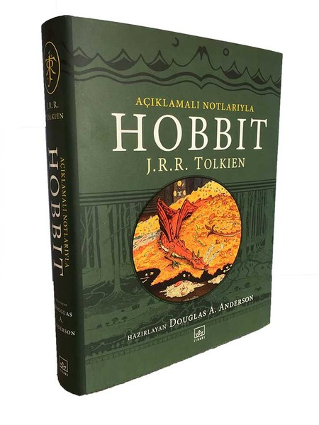

HOBBİT
J. R. R. Tolkien
Hobbit (The Hobbit, 1937), İngiliz filolog ve yazar J. R. R. Tolkien'ın mitopya ve epik fantazya türlerinde yazdığı bir çocuk romanıdır.[1] İlk baskısı 21 Eylül 1937 yılında yapıldı ve dönem eleştirmenlerinden büyük övgü aldı. İngiltere'nin önemli edebiyat ödülü Carnegie Madalyası'na aday gösterildi ve New York Herald Tribune'dan en iyi kurmaca çocuk eseri ödülünü kazandı.[2] Günümüzde popülerliğini hâlâ sürdürmekte ve çocuk edebiyatının klasikleri arasında gösterilmektedir.
Konusu Roman, Tolkien'ın âdeta bir külliyat[3] oluşturduğu Orta Dünya evreninde, evcimen bir hobbit olan Bilbo Baggins'in Smaug adındaki ejderhanın Erebor'da sahiplendiği hazineden bir pay alma çabasıyla çıktığı yolculuğa ve sonrasında gelişen olaylara odaklanır. Gandalf ve on üç cücenin beklenmedik ziyareti sonrasında başlayan Bilbo'nun yolculuğu onu tasasız yaşadığı kırsaldan çıkararak, uğursuz denebilecek bölgelere götürür. Olay örgüsü bölümler halinde anlatılır ve çoğu bölüm Tolkien'in coğrafyasındaki yaratıkları tanımlama çabasıyla ilerler. Tolkien'ın daha sonra yazacağı Yüzüklerin Efendisi üçlemesinde Orta Dünya'nın kaderini değiştirecek ve yıllardır kayıp olan Tek Yüzük'ün yeniden bulunuşunu da içerir. Daha sonra yine üçleme içerisinde yer alacak elf kılıcı Sting, cüce zırhı Mithril gibi Orta Dünya'ya özgü nesneler de bu roman içerisinde anlatılır. Bilbo, kendi doğasının adı kötüye çıkmış, kaprisli, romantik ve aynı zamanda serüvenci yanlarını kabul ederek, zekâ ve sağduyusuyla bir çeşit olgunluk ve bilgeliğe ulaşır. Olay örgüsü önceki bölümlerde adı geçen karakter ve yaratıkların çoğunun Beş Ordular Savaşı'na dahil olmasıyla doruğa ulaşır.[1]
Beş Ordular Muharebesi Beş Ordular Muharebesi, J. R. R. Tolkien'in Hobbit eserinde geçen; Elf'ler, Cüce'ler ve İnsanların, Goblin'ler ve Ork'lara karşı Erebor'un hazinesini ele geçirmek için yaptıkları savaştır. Yalnız dağa hükmeden Smaug, Thorin ve kafilesinin dağa girmesi ve Bilbo Baggins'in kendisiyle konuşmasından sonra sinirlenip Gölkent (Esgaroth)'e saldırmış, bu sırada okçu ozan Bard, Smaug'u hassas noktasından bir kara ok ile vurmuş ve helak etmiştir. Smaug'un ölüm haberi her tarafa yayılmış ve bunun sonucunda feci bir savaş olmuştur. Smaug'un ölümü duyulunca en başta Gölkent'teki insanlar, elfler ve Demir Dağlar'dan gelen cüceler, anlaşmazlık haline düşmüşler ve tam o sırada warglar ve goblinlerin geldiği görülünce insanlar, elfler ve cüceler,warglar ve goblinlere karşı savaşmıştır.Thorin Meşekalkan ve kafilesi de dağdan çıkıp savaşa katılmışlardır. Bu sırada Thorin'i gören düşmanlar ona yüklenmiş ve yeğenleri Fili ile Kili Thorin'i korumaya çalışırken ölmüşlerdir. Bir derideğiştiren olan Beorn'da bu savaşta yer almıştır ve goblin lideri Bolg'u katletmiştir. Savaşta en önemli rollerden birini de Kartallar oynamıştır. Savaşın sonucunda goblinler yenilip bozguna uğramışlardır. Thorin ise savaşta aldığı ağır yaralar yüzünden daha sonra ölmüştür. Savaştan galip çıkan insanlar, elfler ve cüceler aralarında anlaşıp hazineyi paylaşmışlardır. Yalnız Dağ'ın kralı Thorin'in kuzeni Dain Demirayak olmuştur ve elfler ile cüceler arasında barış sağlanmıştır ve uzun yıllar bu civarda huzurlu günler hüküm sürmüştür. Thorin Meşekalkan, kılıcı Orcrist ve Arkentaşı ile birlikte Erebor'un altına gömülmüştür.
HOBBİT - Genel Özet
Hobbitler Orta Dünya’da yaşayan küçük fantastik yaratıklar. Günün birinde başkarakter BILBO BAGGINS’i büyük büyücü GANDALF ve 13 cüce ziyaret ediyor. Hazinelerini ejderha SMAUG’dan geri almak için BILBO’dan yardım istiyorlar ve ona hazineden 14’te 1 pay teklif ediyorlar. BILBO, epey korkmasına rağmen bu maceraya katılmayı kabul ediyor. Önce Orta Dünya’nn bir ucundan diğerine seyahat etmeleri gerekiyor ve bu sırada birden Orklar tarafından esir almıyorlar. Kaçış sırasında BILBO yolunu kaybediyor, ama neyse ki bir mağaradan geçerken onu görünmez kılan bir yüzük buluyor. Yüzük aslında kötücül, iğrenç yaratık GOLLUM’a ait. Yaratık, yüzüğü kaybettiği için epey öfkelenmiş durumda, ama BILBO kendini ve yüzüğü GOLLUM’dan kurtarmayı başarıyor. Sonra diğerlerine rastlıyor, böylece seyahat devam edebiliyor. Ne yazık ki GANDALF kısa bir süre sonra veda ediyor (başka randevular). Bunun hemen ardından, cüceler ve Hobbitlerden oluşan yolcu grubu bu kez de orman Elfleri tarafından yakalanıyor. Ama BILBO yüzükle ve bazı numaralarla hepsini kurtarıyor ve böylece hedeflerine varıyorlar. Cücelerin eskiden yaşadığı Erebor Dağı’na kötü ejderha SMAUG yerleşmiş durumda. BILBO etrafı kolaçan ediyor, ejderha tarafından fark ediliyor, ama ejderha onu yakalayamıyor ve bunun yerine yakındaki Esgaroth şehrini yerle bir ediyor. Fakat sonra bir okçu tarafından vuruluyor, çünkü okçu BILBO sayesinde ejderhanın ya-ralanabilen tek noktasını öğreniyor. Ardından hazine için şiddetli bir kavga başlıyor. Yıkılan şehrin halkı tazminat istiyor, cüceler buranın kendilerine ait olduğunu söyleyerek direniyor. Büyük çatışmaya ramak kala, GANDALF geçerken uğruyor ve herkesi Orkların yaklaşmakta olan ordusuna karşı uyarıyor. Kavga edenler birden müttefik olup Orkları yeniyor.